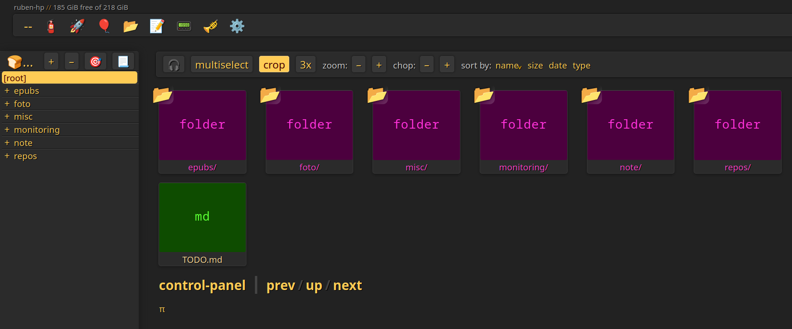
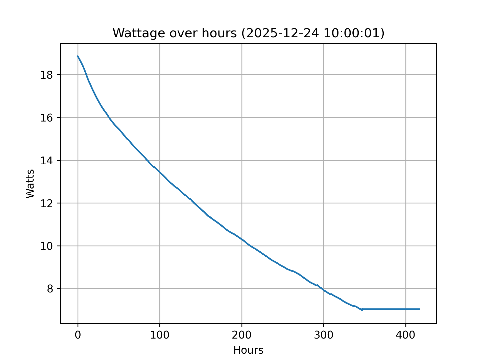
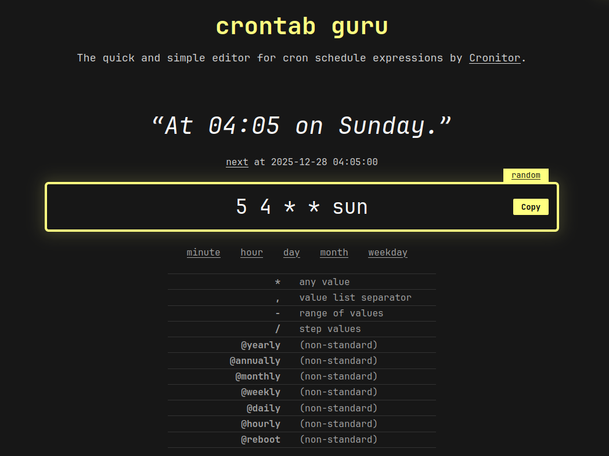

Premise
We live in an app-centric world.
This means that, for example, our photos and (encrypted) music lay in the so-called "cloud" to be displayed and listened through dedicated apps, rather than being files that we can own and easily store/manage ourselves.
Taking aside ethics and the wish of a file-centric world, to the average person the most tangible cons are that:
- the "cloud" is not a long-term storage solution;
- the apps could be discontinued.
One day the cloud services promise you a lot of space, and you make use of it, but the next day they shrink it down, leaving you in a hurry to move out at least some of your files (which is often a completely manual and clunky process), or to pay for more storage. You got even used to the app used to navigate your content, but now you'll have to abandon it.
This happened to me with Google Photos and Google Drive, which I don't recommend in the slightest.
Objective
Realising what I was missing, I wanted to implement a system in my house where:
- Files would be stored locally, without outsourcing to other online services.
- Everything would be backed up periodically.
- Every user from every device in the local network could display, download and upload files from a simple web UI on the browser, even in bulk.
- I could monitor the energy consumption and its cost.
The hardware
I used a crappy old HP Pavilion G7 Notebook PC (model 103C5335KV G=N) I had lying around.
Despite its age, a 1.60GHz CPU and being terrible as a PC, it has been providing a smooth experience as a homeserver. Its battery died a long time ago, but it doesn't matter, as servers need to be plugged 24/7 in order to function properly with no downtime. Initially this concerned me, but after estimating the monthly cost by measuring the voltage over time, I found out that this setup is extremely cheap, more than any cloud service.
I also connected a 512GB hard drive to periodically backup data.
The software
I tried to flash a remarkably light Linux distro called Alpine Linux, but there were compatibility problems, so I went for Linux Mint Xfce.
Sure, there are better distros, especially headless ones for this kind of task, but I was more familiar with Linux Mint, which is also very light.
Copyparty
I'm using Copyparty, which according to many is the best simple FOSS file server out there. It's launched as if it was a single Python script, it's very user-friendly and rich, featuring:
- a nice UI,
- a grid view,
- bulk uploads, fast and resumable,
- file previews,
- a music player with an equalizer,
- two markdown editors
and more stuff I'll look into, like users and permissions.
After launching it from the terminal with the command copyparty, you'll get the local URL (and its QR code) to type in your browser.
Power optimization
Don't suspend when the lid is closed
I made the PC not suspend itself if the lid is closed, by editing /etc/systemd/logind.conf and setting:
HandleLidSwitch=ignore
HandleLidSwitchExternalPower=ignore
HandleLidSwitchDocked=ignore
LidSwitchIgnoreInhibited=no
If you do this, remember to remove the # before each line you edit.
Then I applied the changes with:
sudo systemctl restart systemd-logind
Remove the GUI, boot into text mode
I also removed the desktop environment (Xfce) and its packages altogether to minimize power consumption:
sudo apt purge xfce4 xfce4-*
sudo apt autoremove
Then I disabled the Display Manager:
sudo systemctl disable lightdm
sudo systemctl stop lightdm
And made systemd boot into multi-user (text) mode:
sudo systemctl set-default multi-user.target
Estimate server's electricity monthly cost
Run:
cat /sys/class/power_supply/BAT1/voltage_now
This gives you the microvolts used by your computer. To get Volts (V), multiply by 1000000.
Electricity is billed by the MegaWatt Hours (MWh). To get wattage (W), multiply Volts by the Amperes (A) on the charging cable (e.g., 2.5A).
Assuming the voltage stays constant for an hour, MWh is W/1000.
Multiply MWh by 24 (hours/day) and 30 (days/month). Finally, multiply by the cost per MWh (varies by location) to get the monthly cost.
For example, my setup consumes 7 Watts and costs less than 2€ a month.
Note: Voltage can take weeks of uptime to stabilize. Mine took more than two weeks.
Automating tasks
You can use Cron, a powerful utility to launch processes according to a schedule, to automate tasks such as backups.
You need to run crontab -e and append scheduled commands in the file.
0 18 * * * git -C /home/ruben/homeserver/repos/active/wiki-sapienza-informatica pull
0 0 * * 1 git -C /home/ruben/homeserver/repos/active/stackade pull
0 0 * * 1 git -C /home/ruben/homeserver/repos/active/rubensab.github.io pull
For example here I'm scheduling the pull of some GitHub repos: the first one every day at 18:00 and the other two every Monday at midnight. You can learn and generate this syntax on Crontab Guru.
SSH connection for special tasks
You can connect to the server PC from another device (across the same WI-FI) running ssh yourIp.
Then you'll be able to run commands remotely from the current terminal session, as if you were typing on the other PC.